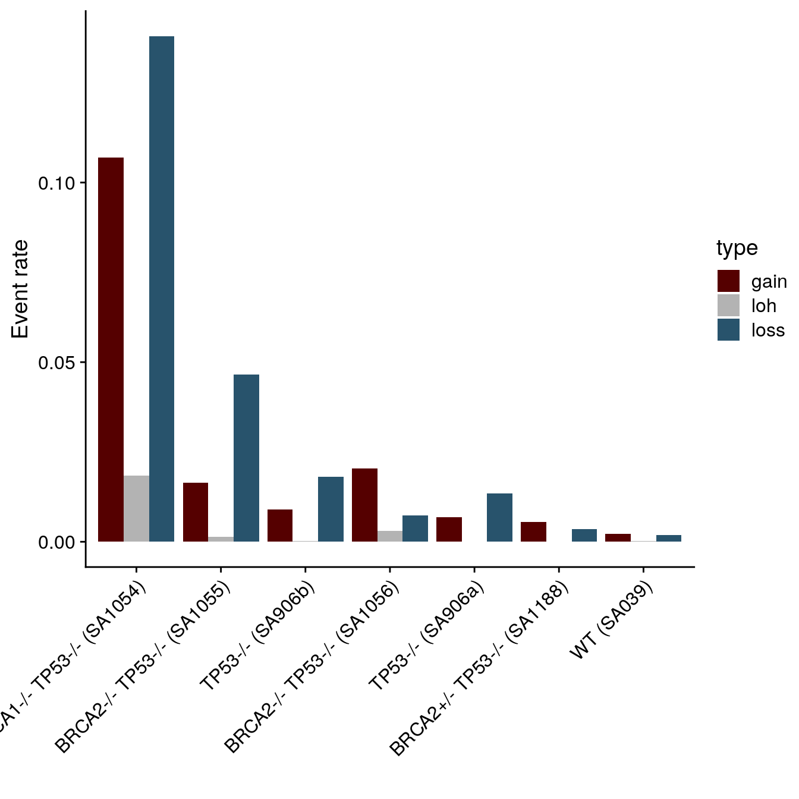
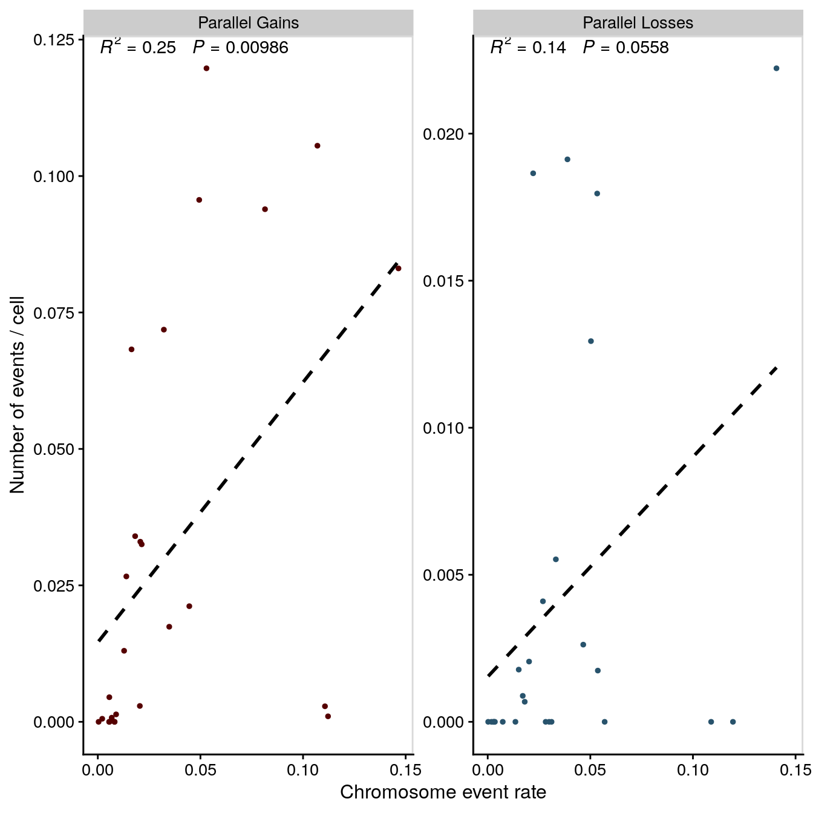

Section 5 Figure 3
5.1 Load data + packages
library(tidyverse)
library(devtools)
library(data.table)
library(cowplot)
library(yaml)
library(glue)
library(here)
library(yaml)
here::i_am("03-figure3.Rmd")
config <- read_yaml(here("metadata", "config.yaml"))
load_all(config$schnapps)
load_all(config$scgenomutils)
theme_set(theme_cowplot())
hscn <- fread(config$hscn)
ploidy <- fread(config$ploidy)
hscn <- hscn[ploidy, on = "cell_id"]
metrics <- fread(config$metrics) %>% select(cell_id, coverage_breadth, state_mode,
sample) %>% arrange(desc(coverage_breadth))
sampletags <- data.frame(sample = unique(hscn$sample)) %>% left_join(., stack(config$datagroups) %>%
rename(sample = values, datagroup = ind) %>% filter(datagroup %in% c("htert",
"tnbc", "hgsc", "her2_brca"))) %>% na.omit()
sampletags$sig_label <- unlist(lapply(sampletags$sample, function(x) config$datasets[[x]]$label))
clones <- fread(config$clones)
snvs <- fread(config$snv)
blacklist <- fread(here("data/dlp_snv_blacklist.csv"))
snvs_filt <- snvs[!start %in% blacklist$start]
snvannot <- fread(config$snvannot)5.2 Example parallel events
5.2.1 Gains
Two cells from SA906 with parallel gains on chr17 and chr20.
ptsize <- 0.5
cellA <- "SA906-A96211C-R53-C59"
exampleAlist <- hscn %>%
filter(cell_id %in% cellA) %>%
plotCNprofileBAF(., chrfilt = c("17", "18", "19", "20"), pointsize = ptsize, maxCN = 8, returnlist = TRUE)
exampleA <- plot_grid(exampleAlist$BAF + theme_cowplot(font_size = 9) + theme(legend.position = "none") +
ggtitle("") +
scale_y_continuous(breaks = c(0.0, 0.5, 1.0)) +
theme(axis.title.x=element_blank(),
axis.text.x=element_blank(),
axis.ticks.x=element_blank()),
exampleAlist$CN + ylab("Copy \n Number")+ theme_cowplot(font_size = 12) + theme(legend.position = "none"), align = "v", ncol = 1, axis = "l", rel_heights = c(0.8, 1))
cellB <- "SA906-A96155B-R29-C24"
exampleBlist <- hscn %>%
filter(cell_id %in% cellB) %>%
plotCNprofileBAF(., chrfilt = c("17", "18", "19", "20"), pointsize = ptsize, maxCN = 8, returnlist = TRUE)
exampleB <- plot_grid(exampleBlist$BAF + theme_cowplot(font_size = 12) + theme(legend.position = "none") +
ggtitle("") +
scale_y_continuous(breaks = c(0.0, 0.5, 1.0)) +
theme(axis.title.x=element_blank(),
axis.text.x=element_blank(),
axis.ticks.x=element_blank()),
exampleBlist$CN + ylab("Copy \n Number")+ theme_cowplot(font_size = 12) + theme(legend.position = "none"), align = "v", ncol = 1, axis = "l", rel_heights = c(0.8, 1))
for_legend <- hscn %>%
filter(sample == "SA1054") %>%
group_by(chr, start, end) %>%
summarise(state = schnapps:::Mode(state),
state_min = schnapps:::Mode(state_min),
BAF = median(BAF),
state_phase = schnapps:::Mode(state_phase),
copy = median(copy)) %>%
ungroup() %>%
mutate(cell_id = "SA906b Clone B") %>% # add dummy cell id
plotCNprofileBAF(., chrfilt = c("17", "18", "19", "20"), pointsize = 2.0, maxCN = 8, returnlist = TRUE)
legends <- plot_grid(NULL, get_legend(for_legend$CN + theme_cowplot(font_size = 9) + guides(col = guide_legend("CN", nrow = 3,
override.aes = list(alpha=1, size = 2, shape = 15)))),
get_legend(for_legend$BAF + theme_cowplot(font_size = 9) + guides(col = guide_legend("ASCN", nrow = 3,
override.aes = list(alpha=1, size = 2, shape = 15)))), NULL,
ncol = 1, rel_heights = c(1,1,1,1))
example_cell_hor_gain <- plot_grid(exampleA,
exampleB,
ncol = 2, rel_heights = c(0.8, 1))
(example_cell_gain <- plot_grid(exampleA, exampleB, ncol = 1, rel_heights = c(1,1)))
5.2.2 Loss
Two cells from SA906 with parallel gains on chr2q.
exampleAlist <- plotCNprofileBAF(hscn, cellid = "SA906-A96215A-R08-C24", chrfilt = c("1",
"2", "3"), pointsize = ptsize, maxCN = 8, returnlist = TRUE)
exampleA <- plot_grid(exampleAlist$BAF + theme_cowplot(font_size = 12) + theme(legend.position = "none") +
ggtitle("") + scale_y_continuous(breaks = c(0, 0.5, 1)) + theme(axis.title.x = element_blank(),
axis.text.x = element_blank(), axis.ticks.x = element_blank()), exampleAlist$CN +
ylab("Copy \n Number") + theme_cowplot(font_size = 12) + theme(legend.position = "none"),
align = "v", ncol = 1, axis = "l", rel_heights = c(0.8, 1))
exampleBlist <- plotCNprofileBAF(hscn, cellid = "SA906-A96155B-R27-C08", chrfilt = c("1",
"2", "3"), pointsize = ptsize, maxCN = 8, returnlist = TRUE)
exampleB <- plot_grid(exampleBlist$BAF + theme_cowplot(font_size = 12) + theme(legend.position = "none") +
scale_y_continuous(breaks = c(0, 0.5, 1)) + ggtitle("") + theme(axis.title.x = element_blank(),
axis.text.x = element_blank(), axis.ticks.x = element_blank()), exampleBlist$CN +
ylab("Copy \n Number") + theme_cowplot(font_size = 12) + theme(legend.position = "none"),
align = "v", ncol = 1, axis = "l", rel_heights = c(0.8, 1))
example_cell_hor_loss <- plot_grid(exampleA, exampleB, ncol = 2)
(example_cell_loss <- plot_grid(exampleA, exampleB, ncol = 1, rel_heights = c(1,
1)))
5.3 Validation using SNVs
We can validate our ability to recover parallel events by looking at the VAF of SNVs in regions of parallel copy number. For example, in a regions that has a parallel lost, we would expect SNVs to have VAF = 0.0 or 1.0 and for these to switch. Conversely in a region with parallel gains where the haplotype specific copy number states are 2|1 and 1|2 we’d expect to see VAF switch from 0.33 to 0.66 and vice-versa.
We looked for this in sample 2295 as this has the highest coverage, a large number of SNVs and parallel events present in a large number of cells.
This code snippet just grabs some legends.
ASlegend <- get_legend(plotCNprofileBAF(hscn, homolog = F, returnlist = T)$BAF +
theme_cowplot(font_size = 11, rel_small = 1) + guides(col = guide_legend("Allele\nImbalance",
ncol = 1, override.aes = list(alpha = 1, size = 2.5, shape = 15))))
cnlegend <- get_legend(plotCNprofile(hscn) + theme_cowplot(font_size = 11, rel_small = 1) +
guides(col = guide_legend("CN", ncol = 2, override.aes = list(alpha = 1, size = 2.5,
shape = 15))))
mylegends <- plot_grid(NULL, cnlegend, ASlegend, NULL, ncol = 1, rel_heights = c(0.3,
1, 1, 0.3))
mylegends
Now we’ll plot the heatmaps and VAFs of SNVs in the 2 states.
source(here("src/parallel_events_util.R"))
ov2295chr9 <- make_parallel_plots(hscn, snvs_filt, snvannot, mychr = "9", mysample = "2295",
mystate = 3, plottitle = "2295 chr 9", cutoff = 0.3, countcutoff = 19)
ov2295chr12 <- make_parallel_plots(hscn, snvs_filt, snvannot, mychr = "12", mysample = "2295",
mystate = 1, plottitle = "2295 chr 12", cutoff = 0.1, countcutoff = 4)
(g2295 <- cowplot::plot_grid(cowplot::plot_grid(ov2295chr9$hm, ov2295chr12$hm, mylegends,
labels = c("a", "b"), ncol = 3, rel_widths = c(1, 1, 0.2)), cowplot::plot_grid(ov2295chr9$vaf +
ggtitle(""), ov2295chr12$vaf + ggtitle(""), NULL, rel_widths = c(1, 1, 0.2),
ncol = 3), ncol = 1))
5.3.1 hTERT recurrent gains/losses
The hTERT cell line data consists of 10,000+ cells that were serially passaged overtime. This represent an excellent dataset to investigate the evolutionary consequences of parallel events, we have 7 cell lines derived from the same ancestral cell line but with different DNA damage repair defects. The cells are then subject to the same experimental conditions. We can then look for chromosomal gains and losses that appear recurrently across the different lines and through haplotype specific copy number inference, see whether a particular allele is preferentially gained or lost.
Below are plots of the frequency of each chromosome arm gain or loss across all the lines.
chrarm <- fread(config$hscnarm) %>% left_join(metrics %>% select(cell_id, sample)) %>%
.[sample %in% config$datagroups$htert] %>% filter(!sample %in% c("2295", "SA1101b",
"SA1101a"))
htertchrgain <- chrarm %>% group_by(arm, sample, chr) %>% summarise(nA = sum(state ==
3 & phase == "A"), nB = sum(state == 3 & phase == "B"), ncells = length(unique(cell_id))) %>%
ungroup() %>% mutate(f_A = nA/ncells, f_B = nB/ncells) %>% arrange(sample) %>%
group_by(sample, chr) %>% summarise(f_A = max(f_A), f_B = max(f_B)) %>% pivot_longer(c("f_A",
"f_B")) %>% separate(name, c("x", "phase"), "_") %>% mutate(sample = factor(sample,
levels = c("SA039", "SA906a", "SA906b", "SA1101a", "SA1101b", "SA1188", "SA1056",
"SA1055", "SA1054"))) %>% filter(chr != "X") %>% mutate(chr = factor(chr,
levels = sort(as.numeric(unique(chr))))) %>% ggplot(aes(x = sample, y = value,
fill = phase)) + geom_col(position = "dodge") + coord_flip() + scale_fill_manual(values = c(scCNphase_colors[["A-Gained"]],
scCNphase_colors[["B-Gained"]])) + ylab("Proportion of cells with gain") + xlab("") +
theme_cowplot(font_size = 12) + scale_y_continuous(breaks = c(0, 0.5, 1), limits = c(0,
1)) + labs(fill = "Gained allele") + # theme(legend.position = c(0.8, 0.8)) +
scale_x_discrete(breaks = c("SA039", "SA906a", "SA906b", "SA1101a", "SA1101b", "SA1188",
"SA1056", "SA1055", "SA1054")) + facet_wrap(~chr) + panel_border() + ggtitle("Gains")
htertchrloss <- chrarm %>% group_by(arm, sample, chr) %>% summarise(nA = sum(state ==
1 & phase == "A"), nB = sum(state == 1 & phase == "B"), ncells = length(unique(cell_id))) %>%
ungroup() %>% mutate(f_A = nA/ncells, f_B = nB/ncells) %>% arrange(sample) %>%
group_by(sample, chr) %>% summarise(f_A = max(f_A), f_B = max(f_B)) %>% pivot_longer(c("f_A",
"f_B")) %>% separate(name, c("x", "phase"), "_") %>% mutate(sample = factor(sample,
levels = c("SA039", "SA906a", "SA906b", "SA1101a", "SA1101b", "SA1188", "SA1056",
"SA1055", "SA1054"))) %>% filter(chr != "X") %>% mutate(chr = factor(chr,
levels = sort(as.numeric(unique(chr))))) %>% ggplot(aes(x = sample, y = value,
fill = phase)) + geom_col(position = "dodge") + coord_flip() + theme_cowplot(font_size = 12) +
scale_fill_manual(values = c(scCNphase_colors[["A-Hom"]], scCNphase_colors[["B-Hom"]])) +
ylab("Proportion of cells with loss") + xlab("") + scale_y_continuous(breaks = c(0,
0.5, 1), limits = c(0, 1)) + labs(fill = "Lost allele") + # theme(legend.position = c(0.8, 0.8)) +
scale_x_discrete(breaks = c("SA039", "SA906a", "SA906b", "SA1101a", "SA1101b", "SA1188",
"SA1056", "SA1055", "SA1054")) + facet_wrap(~chr) + panel_border() + ggtitle("Losses")
gtogether <- plot_grid(htertchrgain + theme(legend.position = "bottom"), htertchrloss +
theme(legend.position = "bottom"), ncol = 2, rel_widths = c(1, 1), axis = "tb",
align = "h")
gtogether
Chr20 is quite striking, where both alleles are gained in some cells across all the lines, suggesting it provides a fitness advantage in this system. Notably Chr20 is also commonly gained in breast cancers.
(htertchr20plot <- chrarm %>% filter(chr == "20") %>% group_by(arm, sample) %>% summarise(nA = sum(state ==
3 & phase == "A"), nB = sum(state == 3 & phase == "B"), ncells = length(unique(cell_id))) %>%
ungroup() %>% mutate(f_A = nA/ncells, f_B = nB/ncells) %>% arrange(sample) %>%
group_by(sample) %>% summarise(f_A = max(f_A), f_B = max(f_B)) %>% pivot_longer(c("f_A",
"f_B")) %>% separate(name, c("x", "phase"), "_") %>% mutate(sample = factor(sample,
levels = c("SA039", "SA906a", "SA906b", "SA1101a", "SA1101b", "SA1188", "SA1056",
"SA1055", "SA1054"))) %>% ggplot(aes(x = sample, y = value, fill = phase)) +
geom_col(position = "dodge") + theme_cowplot(font_size = 12) + coord_flip() +
scale_fill_manual(values = c(scCNphase_colors[["A-Gained"]], scCNphase_colors[["B-Gained"]])) +
ylab("Proportion of cells with chr20 gain") + xlab("") + labs(fill = "Gained allele") +
theme(legend.position = c(0.5, 0.2)) + scale_x_discrete(breaks = c("SA039", "SA906a",
"SA906b", "SA1101a", "SA1101b", "SA1188", "SA1056", "SA1055", "SA1054")))5.4 Number of parallel events
Here, I’ll calculate the number of parallel events per sample. A parallel event is defined as follows:
- Segment of the genome >4Mb
- At least 20 cells with a copy number change
- A minimum of 1% with allele A gained/lost and a minimum of 1% with allele B gained/lost
ncells <- hscn %>% .[, list(ncells = length(unique(cell_id))), by = .(sample)]
xloss <- hscn %>% .[state == 1 & LOH == "LOH" & str_detect(state_phase, "Hom")] %>%
.[, list(n = .N), by = .(sample, chr, start, end, state_phase, state)] %>% .[ncells,
on = "sample"] %>% .[, `:=`(f, n/ncells)] %>% pivot_wider(names_from = "state_phase",
values_from = c("n", "f")) %>% na.omit() %>% arrange(sample, chr, start) %>%
filter(`n_A-Hom` > 1 & `n_B-Hom` > 1)
con_loss <- xloss %>% group_by(sample, chr) %>% mutate(dist_to_next = start - lag(start)) %>%
ungroup() %>% fill(dist_to_next, .direction = "updown") %>% mutate(split = ifelse(dist_to_next <
4100000, 0, 1), rlid = rleid(split)) %>% group_by(sample, chr, rlid) %>% summarise(n_AHom = mean(`n_A-Hom`),
n_BHom = mean(`n_B-Hom`), f_AHom = mean(`f_A-Hom`), f_BHom = mean(`f_B-Hom`),
n = n(), start = first(start), end = last(end)) %>% ungroup() %>% # filter for 19 cells and 1% frequency
filter(n > 19, f_AHom > 0.01, f_BHom > 0.01) %>% mutate(rat = pmin(f_AHom, f_BHom)/(f_AHom +
f_BHom), ncells = n_AHom + n_BHom, ftot = f_AHom + f_BHom) %>% group_by(sample) %>%
summarise(n = n() - 1) %>% ungroup() %>% mutate(type = "Parallel Losses")
x_gain <- hscn %>% .[(state == 3) & (LOH != "LOH")] %>% .[, list(n = .N), by = .(sample,
chr, start, end, state_phase)] %>% .[ncells, on = "sample"] %>% .[, `:=`(f, n/ncells)] %>%
pivot_wider(names_from = "state_phase", values_from = c("n", "f")) %>% na.omit() %>%
arrange(sample, chr, start) %>% filter(`n_A-Gained` > 1 & `n_B-Gained` > 1)
con_gain <- x_gain %>% group_by(sample, chr) %>% mutate(dist_to_next = start - lag(start)) %>%
ungroup() %>% fill(dist_to_next, .direction = "updown") %>% mutate(split = ifelse(dist_to_next <
4100000, 0, 1), rlid = rleid(split)) %>% group_by(sample, chr, rlid) %>% summarise(n_AGained = mean(`n_A-Gained`),
n_BGained = mean(`n_B-Gained`), f_AGained = mean(`f_A-Gained`), f_BGained = mean(`f_B-Gained`),
n = n(), start = first(start), end = last(end)) %>% ungroup() %>% filter(n >
19, f_AGained > 0.01, f_BGained > 0.01) %>% mutate(rat = pmin(f_AGained, f_BGained)/(f_AGained +
f_BGained), ncells = n_AGained + n_BGained, ftot = f_AGained + f_BGained, width = (end -
start)/1e+06) %>% group_by(sample) %>% summarise(n = n() - 1) %>% ungroup() %>%
mutate(type = "Parallel Gains")We wanted to investigate the hypothesis that parallel events may just be a consequence of increased instability. To test this I’ll calculate the inferred chromosome event rates and see how this correlates with the number of parallel events.
misseg <- fread(config$parsimony) %>%
filter(cn_input == "hscn") %>%
pivot_wider(names_from = "type", values_from = "pars_score") %>%
mutate(loh = ifelse(loh - loss1copy < 0, 0, loh - loss1copy)) %>%
pivot_longer( names_to = "type", values_to = "pars_score", c("gain/loss", "loh", "gain", "loss", "loss1copy")) %>%
mutate(f = pars_score / ncells) %>%
filter(type %in% c("gain", "loss", "loh")) %>%
mutate(type = factor(type, levels = c("gain", "loss", "loh"))) %>%
group_by(sample, type) %>%
summarise(f = mean(f)) %>%
filter(type != "loh") %>%
summarize(f= mean(f))
df_pevents <- expand.grid(unique(hscn$sample), c("Parallel Gains", "Parallel Losses")) %>%
rename(sample = Var1, type = Var2)
df_pevents <- df_pevents %>%
left_join(misseg) %>%
left_join(bind_rows(con_gain, con_loss)) %>%
replace_na(list(n = 0))
library(ggpmisc)
my.formula <- y ~ x
(pevents_plot <- df_pevents %>%
left_join(ncells) %>%
filter(!sample %in% c("2295", "SA1101b", "SA1101a")) %>%
filter(!sample %in% c("DG1197", "DG1134", "SA1162")) %>%
ggplot(aes(x = f, y = n / ncells)) +
geom_point(size = 1, aes(fill = type, col = type, group = type)) +
#ggrepel::geom_label_repel(aes(label = sample)) +
scale_fill_manual(values = c("#550000", "#28536C")) +
scale_color_manual(values = c("#550000", "#28536C")) +
geom_smooth(method = "lm", se = F, linetype = 2, col = "black") +
facet_wrap(~type, ncol = 2, scales = "free_y") +
stat_poly_eq(formula = my.formula,
aes(label = paste( ..rr.label.., ..p.value.label.., sep = "~~~")),
parse = TRUE, label.y = 30) +
theme_cowplot(font_size = 12) +
theme(legend.position = "none") +
panel_border() +
xlab("Missegregation rate") +
ylab("Number of events / cell"))
Here are the number of events per sample divided by the number of cells (we’re more likely to see parallel event in samples with more cells).
(pevents_counts <- df_pevents %>%
left_join(ncells) %>%
group_by(sample) %>%
mutate(ord = mean(n / ncells)) %>%
ungroup() %>%
filter(!sample %in% c("DG1134", "DG1197", "SA1162")) %>%
filter(!sample %in% c("2295", "SA1101b", "SA1101a")) %>%
mutate(ttype = ifelse(sample %in% config$datagroups$htert, "hTERT", "Tumors")) %>%
ggplot(aes(x = fct_reorder(sample, ord, .desc = T), y = n / ncells, fill = type)) +
geom_bar(stat = "identity",
position = position_dodge(preserve = "single"), alpha = 0.6) +
theme_cowplot(font_size = 12, line_size = 0.9) +
#coord_flip() +
xlab("") +
theme(legend.position = c(0.8, 0.8), legend.title = element_blank()) +
scale_fill_manual(values = c("#550000", "#28536C")) +
ylab("Number of events / cell") +
scale_y_continuous(expand = c(0.01, 0)) +
facet_grid(~ttype, scales = "free_x", space = "free_x") +
scale_x_discrete(guide = guide_axis(angle = 45)))
5.5 Heatmaps per chromosome
Here I’ll pull out some examples of parallel events in the tumors.
# gains
sa1049chr1 <- make_parallel_plots(hscn, snvs_filt, snvannot, mychr = "1", mysample = "SA1049",
mystate = 3, plottitle = "SA1049 chr 1", cutoff = 0.3, countcutoff = 5)
sa1182chr6 <- make_parallel_plots(hscn, snvs_filt, snvannot, mychr = "6", mysample = "SA1182",
mystate = 3, plottitle = "SA1182 chr 6", cutoff = 0.3, countcutoff = 5)
# sa535chr21 <- make_parallel_plots(hscn, snvs_filt, snvannot, mychr = '21',
# mysample = 'SA535', mystate = 3, plottitle = 'SA535 chr 21', cutoff = 0.3,
# countcutoff = 5)
sa535chr20 <- make_parallel_plots(hscn, snvs_filt, snvannot, mychr = "20", mysample = "SA535",
mystate = 3, plottitle = "SA535 chr 21", cutoff = 0.3, countcutoff = 5)
sa535chrX <- make_parallel_plots(hscn, snvs_filt, snvannot, mychr = "X", mysample = "SA535",
mystate = 3, plottitle = "SA535 chr X", cutoff = 0.3, countcutoff = 5)
sa609chr16 <- make_parallel_plots(hscn, snvs_filt, snvannot, mychr = "16", mysample = "SA609",
mystate = 3, plottitle = "SA609 chr 16", cutoff = 0.3, countcutoff = 5)
sa609chr3 <- make_parallel_plots(hscn, snvs_filt, snvannot, mychr = "3", mysample = "SA609",
mystate = 3, plottitle = "SA609 chr 3", cutoff = 0.3, countcutoff = 5)
sa1162chr18 <- make_parallel_plots(hscn, snvs_filt, snvannot, mychr = "18", mysample = "SA1162",
mystate = 3, plottitle = "SA1162 chr 18", cutoff = 0.3, countcutoff = 5)
sa1162chr15 <- make_parallel_plots(hscn, snvs_filt, snvannot, mychr = "15", mysample = "SA1162",
mystate = 3, plottitle = "SA1162 chr 15", cutoff = 0.3, countcutoff = 5)
sa604chr7 <- make_parallel_plots(hscn, snvs_filt, snvannot, mychr = "7", mysample = "SA604",
mystate = 7, plottitle = "SA604 chr 7", cutoff = 0.3, countcutoff = 5)
# losses
sa1184chr3 <- make_parallel_plots(hscn, snvs_filt, snvannot, mychr = "3", mysample = "SA1184",
mystate = 1, plottitle = "SA1184 chr 3", cutoff = 0.1, countcutoff = 2, plotsnvs = FALSE)
sa1053chr15 <- make_parallel_plots(hscn, snvs_filt, snvannot, mychr = "15", mysample = "SA1053",
mystate = 1, plottitle = "SA1053 chr 15", cutoff = 0.3, countcutoff = 2, clustfield = "BAF")
sa1052chr15 <- make_parallel_plots(hscn, snvs_filt, snvannot, mychr = "15", mysample = "SA1052",
mystate = 2, plottitle = "SA1052 chr 15", cutoff = 0.3, countcutoff = 2, clustfield = "BAF")
sa501chr15 <- make_parallel_plots(hscn, snvs_filt, snvannot, mychr = "15", mysample = "SA501",
mystate = 1, plottitle = "SA1052 chr 15", cutoff = 0.3, countcutoff = 2, clustfield = "BAF")
cowplot::plot_grid(sa1049chr1$hm, sa609chr3$hm, sa1182chr6$hm, sa1053chr15$hm, sa1184chr3$hm,
sa1052chr15$hm, ncol = 3, labels = c("d", "e", "f", "g", "h", "i"))
5.6 Effect on the transcriptome
A reasonable hypothesis for the effect that a parallel events has on the cellular transcriptome is that it is the same and produces a convergent effect. That is a gain of allele “A” versus allele “B” results in the same changes on the transcriptome because both events would increase gene dosage similarly. This is tricky to test in bulk sequencing where we have mixtures of cells but is possible with single cells.
However, even in single cells this type of question is confounded by cells having different copy number alterations in addition to the parallel event. Therefore ideally, we’d like to be able to profile the transcriptome of cells that have very similar copy number profiles apart from the parallel event. Fortunately we could identify such a group of cells in SA906b, where cells lost different alleles of chr2q but the other chromosomes had largelt similar copy number profiles as seen below.
source(here("src/bfb_events_util.R"))
sa906bchr2 <- make_parallel_plots(hscn, snvs_filt, snvannot, mychr = "2", mysample = "SA906b",
mystate = 1, plottitle = "SA906b chr 2", cutoff = 0.3, umapmetric = "cosine",
clustfield = "BAF", show_clone_label = TRUE)
chroms <- unique(hscn$chr)
chroms <- chroms[!chroms %in% c("14", "16", "18", "19", "21", "22")]
fullheatmap <- makeheatmap(hscn[cell_id %in% sa906bchr2$cl$clustering$cell_id], spacer_cols = 15,
show_clone_label = T, cl = sa906bchr2$cl, chrlabels = chroms, showlegend = T,
w = 40)
gsa906bplot <- plot_grid(NULL, fullheatmap, NULL, plot_grid(NULL, sa906bchr2$umap,
NULL, rel_heights = c(0.1, 0.5, 1, 0.5), ncol = 3, labels = c("", "b")), ncol = 1,
rel_heights = c(0.05, 1, 0.1, 0.5), labels = "a")
gsa906bplot
We then generate single cell RNA sequencing data from the same single cell suspension and genotyped haplotype blocks. We integrated these into a Seurat object.
library(Seurat)
SA906b <- readRDS(config$rna_sa906b)
# filter out replicating cells
SA906b <- subset(SA906b, subset = Phase == "G1")
SA906b <- RunUMAP(SA906b, reduction.name = "UMAPsample3", dims = 1:50)
SA906b <- FindNeighbors(SA906b)
SA906b <- FindClusters(SA906b, resolution = 0.4)## Modularity Optimizer version 1.3.0 by Ludo Waltman and Nees Jan van Eck
##
## Number of nodes: 8812
## Number of edges: 277725
##
## Running Louvain algorithm...
## Maximum modularity in 10 random starts: 0.8335
## Number of communities: 5
## Elapsed time: 1 secondsWe can use Seurat functionality to plot chromosome BAF values onto the UMAP.
sc <- DimPlot(SA906b, group.by = "seurat_clusters", reduction = "UMAPsample3", pt.size = 0.5)
sc <- LabelClusters(plot = sc, id = "seurat_clusters", size = 7) + xlab("UMAP 1") +
ylab("UMAP 2") + theme_cowplot(font_size = 12, line_size = 0.9) + theme(legend.position = "none") +
ggtitle("")
(umap2q <- FeaturePlot(SA906b, "BAF-2q", reduction = "UMAPsample3", pt.size = 0.5) +
scale_color_gradientn(colours = scBAFstate_colors, name = "BAF 2q", guide = guide_colourbar(direction = "vertical",
title.position = "top", barwidth = 1)) + xlab("UMAP 1") + ylab("UMAP 2") +
theme_cowplot(font_size = 12, line_size = 0.9) + ggtitle(element_blank()) + theme(legend.position = "right"))
Now I’ll define cells that are homozygous for A and for B and calculate the proportion of each in all the gene expression clusters.
SA906b <- AddMetaData(SA906b, GetAssayData(SA906b, assay = "BAF")["BAF-2q", ] < 0.1,
col.name = "BAF2qA")
SA906b <- AddMetaData(SA906b, GetAssayData(SA906b, assay = "BAF")["BAF-2q", ] > 0.9,
col.name = "BAF2qB")
propsdf <- SA906b@meta.data %>% group_by(seurat_clusters) %>% summarise(A = sum(BAF2qA),
B = sum(BAF2qB), n = dplyr::n()) %>% ungroup() %>% mutate(Balanced = n - A -
B)We can then do a proportions test to see if they’re enriched in any clusters.
##
## 5-sample test for equality of proportions without continuity
## correction
##
## data: propsdf$A out of propsdf$n
## X-squared = 38.883, df = 4, p-value = 7.365e-08
## alternative hypothesis: two.sided
## sample estimates:
## prop 1 prop 2 prop 3 prop 4 prop 5
## 0.017695296 0.008840354 0.008542141 0.001342282 0.001508296##
## 5-sample test for equality of proportions without continuity
## correction
##
## data: propsdf$B out of propsdf$n
## X-squared = 487.96, df = 4, p-value < 2.2e-16
## alternative hypothesis: two.sided
## sample estimates:
## prop 1 prop 2 prop 3 prop 4 prop 5
## 0.138109625 0.047321893 0.025056948 0.002684564 0.008295626I’ll now plot these proportions.
props <- propsdf %>% pivot_longer(c("A", "B", "Balanced")) %>% mutate(f = value/n) %>%
ggplot(aes(x = seurat_clusters, y = f, fill = name)) + geom_col() + scale_fill_manual(values = as.vector(scBAFstate_colors[c("0",
"0.5", "1")]), breaks = c("A", "Balanced", "B"), labels = c("A loss", "Balanced",
"B loss")) + theme_cowplot(font_size = 12, line_size = 0.9) + ylab("Proportion") +
xlab("Gene expression cluster") + theme(legend.position = "top", legend.title = element_blank())
propsdna <- hscn %>% .[sample == "SA906b"] %>% .[start > 93300000] %>% .[chr == "2",
list(state = sum(state == 1)/.N, A = sum(state_phase == "A-Hom" & state == 1)/.N,
B = sum(state_phase == "B-Hom" & state == 1)/.N), by = "cell_id"] %>% arrange(desc(state)) %>%
mutate(state = state > 0.5, A = A > 0.5, B = B > 0.5) %>% pivot_longer(cols = c("A",
"B")) %>% group_by(name) %>% summarise(f = sum(value)/dplyr::n())
propsdna <- bind_rows(propsdna, data.frame(name = "Balanced", f = 1 - sum(propsdna$f)))
propsdnaplot <- propsdna %>% ggplot(aes(x = "scDNA", y = f, fill = name)) + geom_col() +
scale_fill_manual(values = as.vector(scBAFstate_colors[c("0", "0.5", "1")]),
breaks = c("A", "Balanced", "B"), labels = c("A loss", "Balanced", "B loss")) +
theme_cowplot(font_size = 12, line_size = 0.9) + ylab("Proportion") + xlab("") +
theme(legend.position = "none", legend.title = element_blank()) + theme(axis.title.y = element_blank(),
axis.text.y = element_blank(), axis.ticks.y = element_blank())
props <- plot_grid(props, propsdnaplot, rel_widths = c(1, 0.2), align = "h", axis = "tb")
props
And now I’ll group all these figure together.
(rnaplot <- plot_grid(plot_grid(sc, umap2q, ncol = 2, align = "h", axis = "tb", rel_widths = c(1,
1.2), labels = c("m", "n", "o")), props, ncol = 2, rel_widths = c(1, 0.5), labels = c("",
"o")))
5.7 Composite figure
The below will merge all these figures together to produce the final figure.
bafdiagramgain <- ggdraw() + draw_image(here("diagrams/bafdiagramgain.png"), scale = 1.2)
bafdiagramloss <- ggdraw() + draw_image(here("diagrams/bafdiagramloss.png"), scale = 1.2)
top <- plot_grid(plot_grid(NULL, bafdiagramloss, example_cell_hor_loss, rel_widths = c(0.1,
0.3, 1), ncol = 3), NULL, plot_grid(bafdiagramgain, example_cell_hor_gain, rel_widths = c(0.3,
1)), NULL, legends, ncol = 5, rel_widths = c(0.6, 0.1, 0.6, 0.05, 0.2), labels = c("a",
"b"))
middle1 <- plot_grid(htertchr20plot, NULL, cowplot::plot_grid(sa1049chr1$hm, sa609chr3$hm,
sa1182chr6$hm, sa1053chr15$hm, sa1184chr3$hm, sa1052chr15$hm, ncol = 3, labels = c("d",
"e", "f", "g", "h", "i")), ncol = 3, rel_widths = c(0.5, 0.1, 1), labels = c("c",
""))
middle2 <- plot_grid(pevents_counts, NULL, pevents_plot, ncol = 3, rel_widths = c(1,
0.1, 0.7), labels = c("j", "", "k"))
bottom <- cowplot::plot_grid(plot_grid(NULL, sa906bchr2$hm, NULL, ncol = 1, rel_heights = c(0.01,
1, 0.02)), rnaplot, ncol = 2, rel_widths = c(0.3, 1), labels = c("l"))
myplot <- plot_grid(top, NULL, middle1, NULL, middle2, NULL, bottom, ncol = 1, rel_heights = c(0.7,
0.1, 1, 0.1, 0.8, 0.1, 1))
myplot